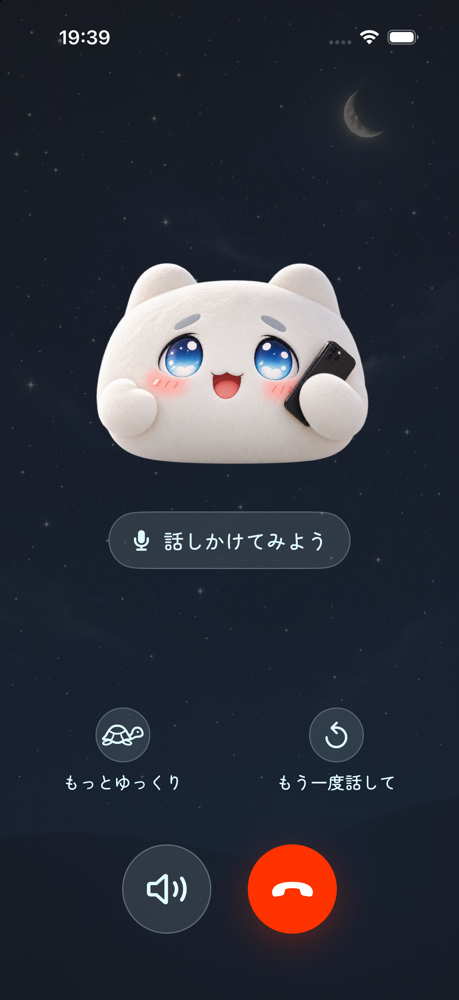
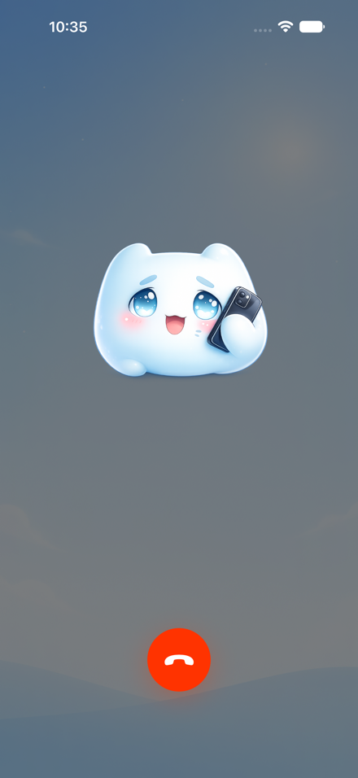
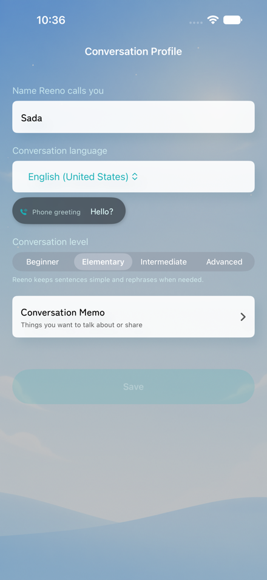

AI comes to talk to you
Reeno
Reeno calls within the time windows you choose, turning an incoming call into a natural opportunity to speak another language. The more you talk, the more continuous the conversation can become.
Language practice that calls you
Instead of relying on you to open an app and start a lesson, Reeno brings the speaking opportunity to you through an incoming AI call.
- Calls within your schedule Choose the days and time windows when calls are allowed, or request a call immediately.
- Conversation continuity Past conversations and information about you can help future calls feel more familiar and connected.
- Review after each call Check a conversation summary and learning feedback, including more natural expressions and points to improve.
- Seven supported languages Practice English, Japanese, Korean, Chinese, Spanish, French, or German.
Read the official Reeno press release on PR TIMES (Japanese)
Your first conversation, at your pace.
BEGINNER SUPPORT
Not ready to speak only in a new language? Beginner support helps you keep the conversation going.
Your native language is welcome
If you cannot find the words in the language you are learning, it is OK to use your native language. You do not have to speak only in the new language.
Ask Reeno to slow down
Use the slow-down button on the call screen to ask Reeno to speak more slowly, so you can follow along at your own pace.
Ask to hear it again
Missed something? Tap the repeat button to ask Reeno to say it again, even when you do not know how to ask in the language you are learning.
Choose Beginner as your conversation level in your conversation profile to practice with beginner support.

GALLERY
-
AI that
calls youUnexpected practice, closer to everyday conversation


- 7-day free periodTry Reeno free for the first seven days.
- SubscriptionsPaid plans are required for continued use and expanded call limits.
- Post-call reviewReview a summary and learning feedback after you speak.
Bring a moment of conversation into the day.
Frequently asked questions
Can I use Reeno as a beginner?
Yes. Choose Beginner as your conversation level in your conversation profile. You can use your native language when you cannot find the words, and use the slow-down and repeat buttons on the call screen to ask Reeno to speak more slowly or say something again.
What is Reeno?
Reeno is a language-learning app that calls during time windows you choose. Answer the call to start an AI conversation, then review a summary and learning feedback afterward.
Which languages can I practice?
Reeno supports English, Japanese, Korean, Chinese, Spanish, French, and German.
Can I choose when calls arrive?
Yes. Choose the days and time windows when calls are allowed. You can also request a call immediately when you want to practice now.
Does Reeno support widgets?
Yes. Add the medium Conversation notes widget to your iPhone Home Screen to review phrases and their meanings in your native language. Use the left and right arrow buttons to move between phrases without opening the app.
Touch and hold an empty area of the Home Screen, then choose Edit, Add Widget, and Reeno. To check or change the language shown, open the Notes tab in Reeno.
If notes are missing or out of date, open Reeno and check your notes. The widget does not support the Lock Screen or audio playback.
Can I try Reeno for free?
The first seven days are free. A paid plan is required for continued use.
DEVELOPER
-
Sadasada
Medical DoctorRunner / iOS Developer
e-Mail: math1729abc@gmail.com
Twitter: @math1729abc
-